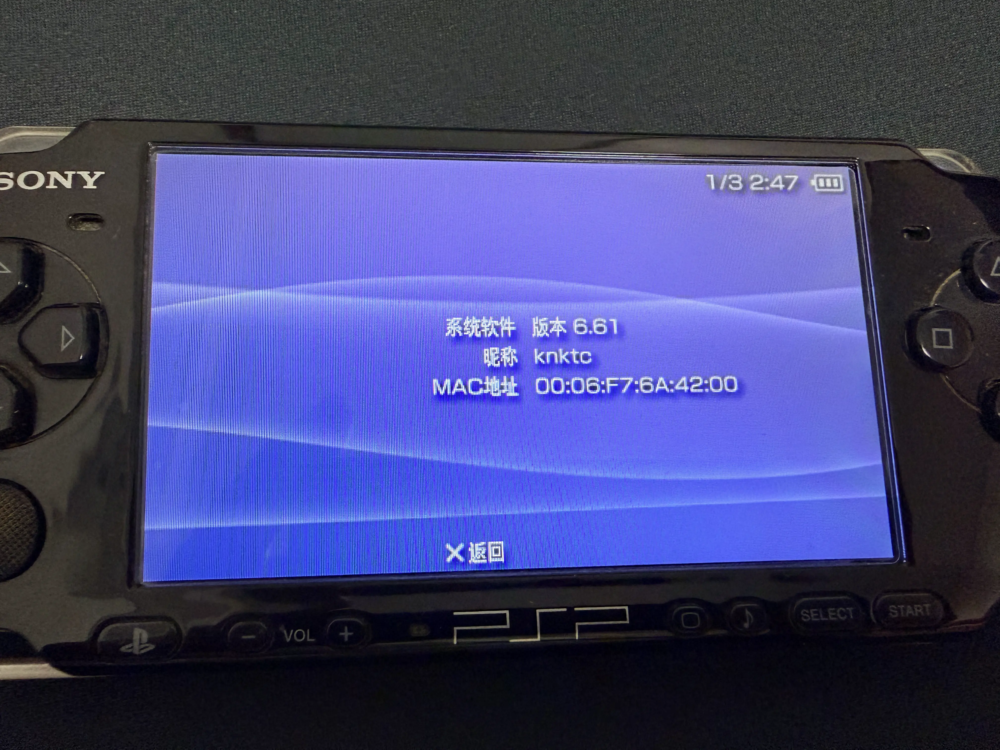
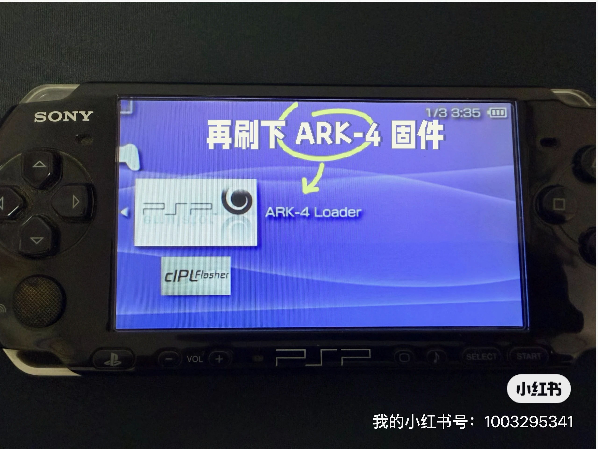

前段时间，我儿子把家里一台吃灰很多年的 PSP 翻了出来。
这是我当年用过的一台 PSP 3000。机器本身还在，但电池已经鼓包了，原来的山寨记忆棒也基本报废。换了新电池之后，我又买了一个记忆棒卡套，插上一张 TF 卡，总算把这台老机器重新点亮了。
机器能开机只是第一步。真正麻烦的是系统和破解环境都太老了。
我这台机器当年用的是 PRO CFW，那时候还做不到现在这样省心，每次彻底关机后都得重新刷一次。如今旧卡已经不能用了，原来的破解文件自然也跟着没了。于是我顺手查了一下现在 PSP 还在用什么方案，结果发现这个圈子居然一直还在更新。
现在比较成熟的一条路，是先把系统升级到官方最后一个正式版本 6.61，再安装 ARK-4。我这次就是按这个思路做的，整套流程走下来并不复杂，记录一下，后面如果还有人把老 PSP 翻出来，或许也能少踩点坑。
先确认当前系统版本
开机后先到系统信息里看一眼。
我这台机器当时还是 6.35：

如果你的版本也比较老，建议先别急着折腾自制固件，先把官方系统升级到 6.61。这是索尼给 PSP 发布的最后一个官方固件版本，后面很多教程和工具默认也都是围绕 6.61 来写的。
先升级到官方 6.61 固件
官方固件文件现在网上还能找到，我这次用的是这个整理站点：
https://darthsternie.net/psp-firmwares/
找到 6.61 对应的下载链接即可。有条件的话，下载后顺手校验一下文件 hash 会更稳一点。
在拷文件之前，建议先把 TF 卡插进记忆棒卡套，再插到 PSP 里格式化一次。这样目录结构和文件系统都会干净一点，后面少出一些莫名其妙的问题。
下载到的固件文件名一般是 661.PBP。把卡接到电脑后，在卡里创建下面这个目录：
1 | /PSP/GAME/UPDATE |
然后把 661.PBP 重命名成 EBOOT.PBP，放到这个目录下面。
之后把卡重新插回 PSP，在“游戏”里的 Memory Stick 下就能看到升级程序了：

按提示一路升级即可。整个过程不算久，完成后再看系统信息，就已经是 6.61 了：

这里多提醒一句：升级固件时一定要保证电量充足，最好插着电源，别在刷机过程中断电。
再安装 ARK-4
系统升完之后，就可以开始装 ARK-4 了。
和很多年前在论坛里到处找破解包不一样，现在 ARK-4 的项目和发布版本都在 GitHub 上，资料也比以前集中得多：
按我写这篇文章时的情况，2026-06-01 能看到的最新正式版是 v4.20.69 r206。发布页面里也明确写了，这是 ARK-4 的最后一个官方版本，后续路线会转向 ARK-5。
下载 release 里的 ARK4.zip 即可：

把 ARK-4 文件复制到记忆卡里
把 TF 卡重新接到电脑上，解压 ARK4.zip，然后把里面几个目录复制到对应位置。
需要的主要是这三项：
- 把
ARK_01234复制到/PSP/SAVEDATA/ - 把
ARK_Loader复制到/PSP/GAME/ - 把
ARK_cIPL复制到/PSP/GAME/（注意这个文件夹在压缩包的PSP目录下）
前两步是让系统先跑起来，第三步是给后面的永久破解做准备。
先刷入临时 ARK-4
把卡插回 PSP 后，到“游戏”里的 Memory Stick 下面，可以先看到 ARK Loader。
先运行它，把临时固件刷进去：

刷好之后，再进系统信息，版本号会带上 ARK-4 Live 的标识。这时候其实已经可以正常跑游戏和自制程序了，只是如果彻底关机，下次还得重新执行一次 ARK Loader：

再刷入 cIPL，做成永久破解
如果你也想要“重启之后依然保持破解状态”的效果，就继续运行 ARK cIPL Flasher。
进入之后按照界面提示确认安装即可，整个过程很快，我这台机器大概几秒钟就完成了：

刷完之后再次查看系统信息，就能看到版本后面已经带上了 cIPL：

我这台 PSP 3000 到这里就已经实现了重启后依旧保持 ARK 的状态，不需要每次开机再手动刷一次。
游戏文件放哪里
最后一步就简单了。
把下载好的 PSP .iso 或 .cso 游戏文件放到记忆卡根目录下的 ISO 文件夹里即可。如果没有这个目录，自己新建一个就行：
1 | /ISO |
放好之后，在机器里就能直接看到游戏：

最后
这次把这台老 PSP 重新折腾起来，最大的感受其实不是“破解终于成功了”，而是很多年前那种熟悉的感觉一下子又回来了。
老机器能重新开机、能重新进游戏，已经很开心；而现在这套升级和破解流程，比我当年折腾的时候也确实成熟了不少。至少对我这台 PSP 3000 来说，从官方 6.35 升到 6.61，再刷入 ARK-4，整个过程比预想中顺利很多。
如果你家里也正好还有一台吃灰的 PSP，不妨找个周末把它翻出来试试。说不定折腾完之后，最先被唤醒的不是主机，而是自己很多年前打游戏时的那段记忆。